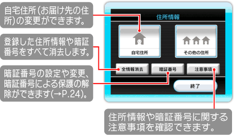

Wii本体に登録した住所を変更・削除するには、「設定」の画面（→P.15）で、「地域と住所の設定」→
「住所の設定」の順に選んでください。

23 |
登録した住所を変更・削除する |
 |
|
※住所情報を暗証番号で保護している場合、はじめに暗証番号の入力画面が表示されます。 ※お届けサービスでお申し込みいただいた商品は、自宅住所にのみお届けします。 ※「Wiiの間ショッピング」で使用する住所情報は、
● お届け先（自宅住所）を変更する
次の手順で、住所情報を変更してください。 1.「住所情報」画面で「自宅住所」を選ぶ 2.変更したい項目をポイントして 3.入力した内容を確認する ● 登録した自宅住所を削除する 「住所情報」画面で「全情報消去」を選び、画面の指示に従って操作してください。※「その他の住所」も同時に削除されます。 ※「全情報消去」を行うと、『Wiiの間』以外で住所情報を利用する他のサービスも利用できなくなります。 ※『Wiiの間』でお届けサービスを申し込んだり、住所情報を利用するその他のサービスを利用したりする場合は、再度住所を登録してください。 |
 |
 |
 |